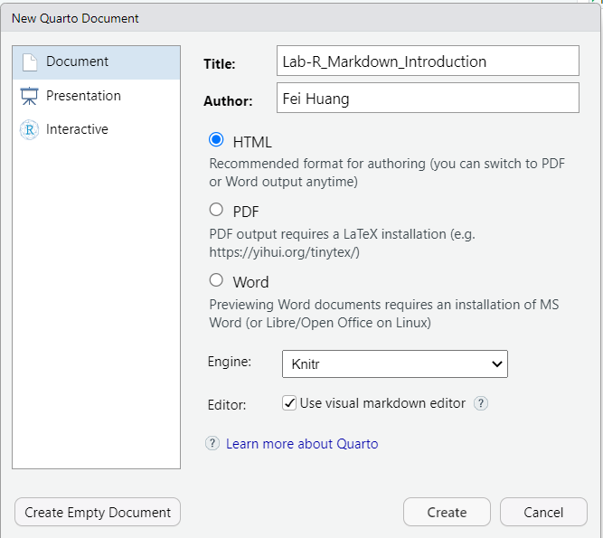
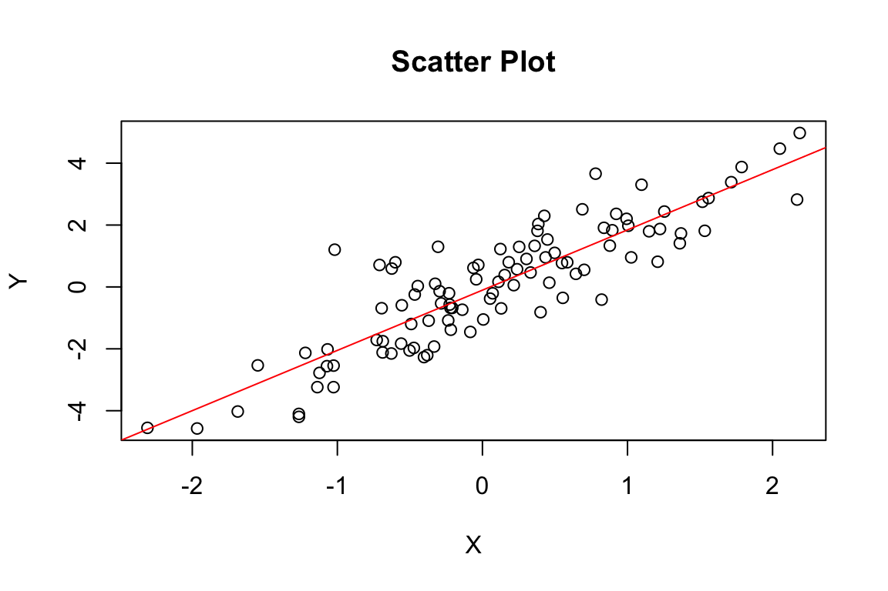
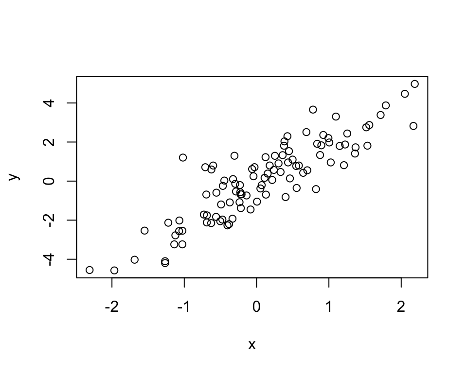

# install.packages("rmarkdown")Lab: Markdown and Reproducible Reports
Actuarial Data Science - Open Learning Resource
Learning Objectives
- Learn how to use Markdown and reproducible reporting tools to write academic reports
- Understand the differences between R Markdown, Quarto, and other markdown-based reporting frameworks
- Practice creating reproducible documents with embedded code in both R and Python
Markdown and Reproducible Reports Introduction
This is a Markdown document that can be used to create HTML, PDF, and MS Word documents with embedded code. Markdown is a simple formatting syntax that is widely used for creating reproducible reports. This lab introduces various markdown-based reporting frameworks, including R Markdown, Quarto, and Jupyter notebooks.
Why Use Markdown for Reproducible Reports?
There are many advantages to using Markdown-based reporting in your work:
- Reproducibility: Code and outputs are directly embedded in the document, ensuring results can be reproduced
- Automation: When data or code changes, all outputs (figures, tables, numbers) are automatically updated
- Version Control: Markdown files work well with Git and other version control systems
- Multiple Output Formats: Create HTML, PDF, Word, and presentation slides from the same source
- Collaboration: Easy to share and collaborate on documents with embedded code
- Cross-Platform: Works on Windows, Mac, and Linux
Available Frameworks
R Markdown
- Primary Language: R
- Package:
rmarkdown - Strengths: Excellent R integration, mature ecosystem, extensive customisation
- Best For: R-focused projects, statistical analysis, and academic publishing
Quarto
- Primary Languages: R, Python, Julia, Observable JavaScript
- Package:
quarto - Strengths: Multi-language support, modern features, and excellent documentation
- Best For: Multi-language projects, modern workflows, and cross-language collaboration
Jupyter Notebooks
- Primary Languages: Python, R, Julia, and many others
- Format:
.ipynbfiles - Strengths: Interactive computing, rich output, and extensive language support
- Best For: Data science, machine learning, and interactive analysis
Other Options
- Bookdown: An extension of R Markdown for books and long documents
- Distill: An R Markdown extension for scientific and technical writing
- Hugo: A static site generator with Markdown support
In this course, we will primarily use Quarto (.qmd).
Installation
For R Markdown
Before installing R Markdown, you need to have R and RStudio installed:
- Install R: Go to R Project and choose the correct version for your system
- Install RStudio: Go to RStudio and install the appropriate version
- Install rmarkdown: Open RStudio and run:
For Quarto
Quarto is the newest and most versatile option:
- Install Quarto: Go to Quarto and download the installer
- Install R: If using R with Quarto, install R as above
- Install Python: If using Python with Quarto, install Python from python.org
For Jupyter Notebooks
Install Python: Download from python.org
Install Jupyter: Open terminal/command prompt and run:
pip install jupyterInstall R kernel (optional): If you want to use R in Jupyter:
install.packages("IRkernel") IRkernel::installspec()Note: For PDF output, you will need a LaTeX distribution. We recommend TinyTeX:
```{r}
#| echo: true
# To install TinyTeX (works with R Markdown and Quarto)
tinytex::install_tinytex()
# To uninstall TinyTeX
tinytex::uninstall_tinytex()
```Creating Your First Document
R Markdown
In RStudio, click “File” → “New File” → “R Markdown”:
Quarto
In RStudio, click “File” → “New File” → “Quarto Document”, or create a new .qmd file manually.

Add the following YAML header:
---
title: "My Report"
format: html
---Jupyter
Open a terminal/command prompt and run:
jupyter notebook
Note
From this point onwards, we will primarily focus on Quarto (.qmd) for reproducible reporting.
Document Structure
YAML Header
The YAML header controls document metadata and output format:
---
title: "My Amazing Report"
author: "Your Name"
date: today
format:
html: default
pdf: default
bibliography: references.bib
---Markdown Content
Markdown provides simple formatting:
- Bold and italic text
- Lists and numbered lists
- Headers with
#,##,### - Links: GitHub
- Images:

Code Chunks
Embed executable code in your document:
R in Quarto:
```{r}
# Your R code here
```Python in Quarto:
```{python}
# Your Python code here
```Code Chunk Options
Control how code chunks behave (specified using #| in Quarto):
echo: false— Hide code, show results
results: "hide"— Show code, hide results
include: false— Hide both code and results
warning: false— Suppress warnings
message: false— Suppress messages
fig-width: 6,fig-height: 4— Control figure size
Example with Options
set.seed(123)
x <- rnorm(100)
y <- 2 * x + rnorm(100)
cor(x, y)
Note
The result is hidden due to results: "hide", which looks like the following:
```{r}
#| label: simulate-data
#| echo: true
#| results: "hide"
#| warning: false
set.seed(123)
x <- rnorm(100)
y <- 2 * x + rnorm(100)
cor(x, y)
```import numpy as np
np.random.seed(123)
x = np.random.normal(0, 1, 100)
y = 2*x + np.random.normal(0, 1, 100)
print(f"Correlation: {np.corrcoef(x, y)[0,1]:.3f}")Correlation: 0.918
Python Setup
If you encounter errors such as “No module named …”, you may need to install the required Python packages.
You can install them using:
pip install package_nameFor example:
pip install numpy matplotlib seabornCreating Visualisations
R Example
plot(x, y, main="Scatter Plot", xlab="X", ylab="Y")
abline(lm(y ~ x), col="red")
Python Example
# Requires matplotlib in the Python used by R (reticulate). Set eval: true locally after py_install("matplotlib") if needed.
import matplotlib.pyplot as plt
plt.figure(figsize=(6, 4))
plt.scatter(x, y, alpha=0.6)
plt.plot(x, 2*x, color="red", linestyle='--')
plt.xlabel('X')
plt.ylabel('Y')
plt.title('Scatter Plot')
plt.show()Inline Code
Embed code results directly in your text:
R in Quarto:
- Markdown Syntax: There are
{r} length(x)data points- Output: There are 100 data points
- Markdown Syntax: The correlation is
{r} round(cor(x,y), 3)- Output: The correlation is 0.879
Python in Quarto:
- Markdown Syntax: There are
{python} len(x)data points- Output: There are
{python} len(x)data points
- Output: There are
- Markdown Syntax: The correlation is
{python} f"{np.corrcoef(x, y)[0,1]:.3f}"- Output: The correlation is
{python} f"{np.corrcoef(x, y)[0,1]:.3f}"
- Output: The correlation is
Note: Inline Python
Inline Python expressions require a Python engine to be enabled in Quarto. In some environments, the Python results above may not display correctly.
To enable inline Python in Quarto, the following conditions are typically required:
Enable the Python engine
Add the following to your YAML header:jupyter: python3However, this changes the execution engine of the document to Python (Jupyter). As a result, R code chunks may no longer run as expected without additional configuration. Therefore, inline Python is not recommended when mixing R and Python in the same document.
Quarto version requirement
Inline Python requires Quarto v1.4 or later. You can check your installed version by running the following in the RStudio Console:system("quarto --version")We recommend installing a version slightly above v1.4. Using the latest version is not necessary and may cause issues when rendering
.qmdfiles.Updating Quarto
Even after installing a newer version of Quarto, RStudio may continue to use its bundled version unless the system PATH is updated. You may need to install Quarto into the RStudio Quarto directory, overwriting the bundled version used by RStudio. For example:C:/Program Files/RStudio/resources/app/bin/quarto
Output Formats
Quarto supports multiple output formats from the same .qmd file:
HTML (html)
- Interactive elements
- Responsive design
- Easy to share online
PDF (pdf)
- Professional appearance
- Suitable for printing
- Requires LaTeX
Word (docx)
- Easy to edit further
- Familiar to many users
- Suitable for collaboration
Presentations
- RevealJS (
format: revealjs) — HTML slides
- Beamer (
format: beamer) — PDF slides
- PowerPoint (
format: pptx) — PowerPoint slides
Best Practices
Reproducibility
- Avoid hard-coding results in your text
- Use inline code for numbers and statistics
- Set random seeds for reproducible results
- Document your data sources
Organisation
- Use meaningful chunk labels
- Group related code chunks together
- Keep chunks focused on single tasks
- Use comments to explain complex code
Version Control
- Track your
.qmdfiles in Git - Do not track generated output files
- Use
.gitignoreto exclude temporary files
Task: Create Your First Report
- Create a new Quarto document (
.qmd) - Add a YAML header with your information
- Write a brief introduction about reproducible reporting
- Create a code chunk that generates some data
- Create a visualisation
- Add inline code to report statistics
- Render your document to HTML and PDF
Resources
- Quarto: Quarto Documentation
- Markdown: Markdown Guide
- R Markdown (optional reference): R Markdown: The Definitive Guide
- Jupyter (optional reference): Jupyter Documentation
Quarto Introduction
Three Components
Quarto documents rely on three main components:
- Markdown for formatted text
- Code chunks for executable code (R, Python, etc.)
- YAML for document metadata and output formats
Markdown for Formatted Text
Markdown is a set of conventions for formatting plain text. You can use Markdown to indicate:
- Bold and italic text: Surround italic text with asterisks, like this without realising it. Surround bold text with two asterisks, like this easy to use.
Examples:
| Markdown Syntax | Output |
|---|---|
|
bold text |
|
italic text |
- Lists: Group lines into bullet points that begin with asterisks or hyphens. Leave a blank line before the first bullet.
Examples:
| Markdown Syntax | Output |
|---|---|
|
|
|
|
- Headers (e.g., section titles): Place one or more hashtags at the start of a line to create a header (or sub-header). For example,
# Say Hello to Markdown. A single hashtag (#) creates a first-level header, two hashtags (##) create a second-level header, and so on.
- Hyperlinks: Create clickable links using
[text](url).
Examples:
| Markdown Syntax | Output |
|---|---|
|
GitHub |
|
Stack Overflow |
|
- and much more
The conventions of Markdown are simple and unobtrusive, making Markdown documents easy to read and write.
You can access a quick guide in RStudio via → “Help” → “Markdown Quick Reference”.
For more details, see the Quarto guide on Markdown Basics.
Chunks
Now, you are familiar with Markdown and Quarto. Quarto supports code chunks that allow you to include executable R or Python code directly in your document, making it easy to create reproducible reports.
Code Chunks
You can use CTRL + ALT + I (Windows) or OPTION + COMMAND + I (Mac) to insert a new code chunk.
It is good practice to assign a label to each chunk using #| label:, for example #| label: simulate-data. Labels are optional but must be unique if used. This helps with debugging and cross-referencing.
Chunk Options
In Quarto, chunk options are specified using #| inside the code block.
echo: false: hide code but show results
results: "hide": show code but hide results
include: false: run code but show neither code nor output
warning: false: suppress warningsmessage: false: suppress messages
set.seed(123)
x <- rnorm(100) # 100 random variables from a standard normal distribution
y <- 2 * x + rnorm(100)
cor(x, y)YAML for Render Parameters
title: “your awesome title”
author: “your name”
date: “today” or specify any date
In Quarto, the format field determines the output format when you render a document.
The format field supports the following values:
html: creates HTML output (default)
pdf: creates PDF output
docx: creates Word output
You can also render your document as a slideshow:
revealjs: creates an HTML slideshow
beamer: creates a PDF slideshowpptx: creates a PowerPoint presentation
Unlike R Markdown, Quarto provides built-in support for cross-referencing, so no additional output format (e.g., bookdown) is required.
Below are examples of format options (each can be used in a complete YAML header).
Examples of Format Options
Table of Contents (TOC)
title: "My Report"
format:
html:
toc: true
toc-depth: 3toc: true: enables the table of contents
toc-depth: controls how many header levels are included
Section Numbering
title: "My Report"
format:
pdf:
number-sections: truenumber-sections: true: adds numbering to section headers
Figure Caption Placement
title: "My Report"
format:
html:
fig-cap-location: bottomfig-cap-location: controls where figure captions appear (top,bottom, ormargin)
Code Folding (HTML only)
title: "My Report"
format:
html:
code-fold: truetrue: folds all code by default (click to expand)false: shows all code (default)show: enables folding but keeps code expanded initially
Code folding is only available in HTML output. It does not apply to PDF or Word formats.
Some options may not apply to all formats. More options for each format are available at: HTML, PDF and Revealjs.
Rendering
To render your .qmd file into HTML, PDF, or Word output, click the “Render” button in RStudio.
- A drop-down menu allows you to select the output format (if multiple formats are specified in the YAML header). You can try rendering to different formats.
- A shortcut on Windows is CTRL + SHIFT + K, and on macOS it is SHIFT + COMMAND + K.
When you render the document, Quarto will process your .qmd file and generate the output based on the YAML settings and Markdown content. The output file will be saved in your working directory, and a preview will be displayed in RStudio.
Advanced Features in Quarto
Figures
You can control figure appearance using chunk options:
```{r}
#| label: fig-scatterplotfig
#| echo: true
#| fig-width: 5
#| fig-height: 4
#| fig-cap: "Scatterplot"
plot(x,y)
```
Note that:
include: false— hides all code, results, and figures
results: "hide"— hides textual output but keeps figures
fig-show: "hide"— hides figures
Including External Images
You can include an external image using Markdown:
.A more flexible approach is to use a code chunk:
```{r}
#| label: unsw
#| echo: true
#| fig-align: center
#| out-width: "50%"
#| fig-cap: "Welcome to UNSW"
knitr::include_graphics('unsw.jpg')
```This allows you to control alignment, size, captions, and cross-referencing.
Global Execution and Chunk Options
You may find yourself using similar chunk options throughout a document. Instead of repeating them in every chunk, you can define global defaults at the beginning of the document.
There are two common ways to set global options in Quarto:
- Use the YAML header to set document-level options
- Use
knitr::opts_chunk$set()for R chunks when using the knitr engine
Global Options in the YAML Header
Quarto allows many execution and output options to be set globally in the YAML header. These options apply to the document unless overridden in an individual code chunk.
For example:
---
title: "My Report"
format:
html:
code-fold: true
fig-width: 6
fig-height: 4
execute:
echo: true
warning: false
message: falseHere: - execute: echo: true shows code by default - execute: warning: false suppresses warnings by default - execute: message: false suppresses messages by default - fig-width and fig-height set the default figure size for the HTML output - code-fold: true enables code folding in HTML output
You can still override these options in a specific chunk. For example:
```{r}
#| echo: false
summary(cars)
```In this chunk, echo: false overrides the global echo: true.
Note
For more details on available execution and output options, see the Quarto guide on Execution Options.
Global Options for R Chunks Using knitr
For R chunks, you can also set global defaults using knitr::opts_chunk$set() in an initial setup chunk:
These options apply to subsequent R chunks unless overridden locally.
For example, you can override the figure height in a specific R chunk:
```{r}
#| label: taller-figure
#| echo: true
#| fig-height: 6
#| fig-cap: "Multiple plots"
par(mfrow=c(2,2))
for(i in 1:4){
plot(x[(1:25)*i], y[(1:25)*i])
}
```
Note
For Quarto documents that mix R and Python, YAML-level options are usually clearer and more consistent. knitr::opts_chunk$set() is mainly for R chunks using the knitr engine and should not be relied on to control Python chunks.
Cross-Referencing
Quarto provides built-in support for cross-referencing figures, tables, equations, and sections.
To create a cross-reference, you need to assign a label to an element. A label is a unique identifier that allows the element to be referenced elsewhere in the document.
Each label uses a prefix to indicate the type of element. Common prefixes include:
sec-for sections
fig-for figures
tbl-for tables
eq-for equations
Once a label is defined, you can refer to it in the text, and Quarto will automatically format the reference and assign numbers where appropriate (e.g., “Section 2”, “Figure 1”, etc.).
Naming tips
- Labels must be unique within the document
- Use kebab-case (e.g.,
sec-my-section)
- Avoid using underscores (
_) in labels
Figures and Tables
We can refer to figures and tables using their labels.
For example, the following figure was defined earlier:
- Markdown Syntax:
@fig-scatterplotfig
- Output: see Figure 2
Table example
To create and reference a table:
```{r}
#| label: tbl-mtcars
#| tbl-cap: "First few rows of mtcars dataset"
knitr::kable(head(mtcars))
```Example:
knitr::kable(head(mtcars))| mpg | cyl | disp | hp | drat | wt | qsec | vs | am | gear | carb | |
|---|---|---|---|---|---|---|---|---|---|---|---|
| Mazda RX4 | 21.0 | 6 | 160 | 110 | 3.90 | 2.620 | 16.46 | 0 | 1 | 4 | 4 |
| Mazda RX4 Wag | 21.0 | 6 | 160 | 110 | 3.90 | 2.875 | 17.02 | 0 | 1 | 4 | 4 |
| Datsun 710 | 22.8 | 4 | 108 | 93 | 3.85 | 2.320 | 18.61 | 1 | 1 | 4 | 1 |
| Hornet 4 Drive | 21.4 | 6 | 258 | 110 | 3.08 | 3.215 | 19.44 | 1 | 0 | 3 | 1 |
| Hornet Sportabout | 18.7 | 8 | 360 | 175 | 3.15 | 3.440 | 17.02 | 0 | 0 | 3 | 2 |
| Valiant | 18.1 | 6 | 225 | 105 | 2.76 | 3.460 | 20.22 | 1 | 0 | 3 | 1 |
- Markdown Syntax:
@tbl-mtcars
- Output: see Table 1
Equations
You can write equations using LaTeX syntax:
$$
\bar{X} = \frac{\sum_{i=1}^n X_i}{n}
$$ {#eq-mean}Example:
\bar{X} = \frac{\sum_{i=1}^n X_i}{n} \tag{1}
- Markdown Syntax:
@eq-mean
- Output: see Equation 1
Sections
You can assign a label to a section by adding {#label} to the header:
### Sections {#sec-sections}You can then refer to this section in text:
- Markdown Syntax:
@sec-sections
- Output: see Section 3.3.4
Citations
To include references in a Quarto document:
Create a bibliography file: Create a
.bibfile in the same directory as your.qmdfile (e.g.,refWeek1.bib).Add references to the file: You can obtain BibTeX entries from sources such as Google Scholar. For example:
- Search for a paper (e.g., Handbook of Data Visualization)
- Click Cite → BibTeX
- Copy the entry and paste it into your
.bibfile
- Search for a paper (e.g., Handbook of Data Visualization)
Specify the bibliography in YAML: Add the following to your YAML header:
bibliography: refWeek1.bibCite in text: Use
@keyto cite a reference, where key is the identifier in the .bib file. For example:- Markdown Syntax:
@chen2007handbook
- Output: Chen, Härdle, and Unwin (2007)
- Markdown Syntax:
Add a reference section: At the end of your document, include:
# ReferencesQuarto will automatically generate the reference list.
Visual Markdown Editor in RStudio
The visual editor is useful for those who are not yet familiar with Markdown or prefer not to write Markdown syntax manually. In RStudio, you can switch between Source mode and Visual mode for a .qmd document by clicking the “Visual” or “Source” button in the editor toolbar.1
As an exercise, you can experiment with the following features of the visual editor:
- Format: bold, italic, underline,
code, superscript, subscript, etc. - Headers: 1st-level header, 2nd-level header, …, 6th-level header
- Hyperlinks
- Lists (bulleted or numbered)
- Insert: citations, cross-references (figures, tables, equations), footnotes, and comments
- And so on
In general, the visual editor makes document editing feel more like working in Word. However, for reproducible documents, it is still important to understand the underlying Markdown and Quarto syntax. Be careful when editing YAML headers, code chunks, and LaTeX equations, as visual editing may occasionally change the underlying source in unexpected ways.
References
Chen, Chun-houh, Wolfgang Karl Härdle, and Antony Unwin. 2007. Handbook of Data Visualization. Springer Science & Business Media.
Footnotes
If you do not see this option, please update RStudio to a recent version.↩︎
Comments
You can add comments in your document that will not appear in the final output.
Example (no text will appear below because it is commented out):
You can also use the RStudio menu:
click Code → Comment/Uncomment Lines to quickly comment or uncomment selected lines.